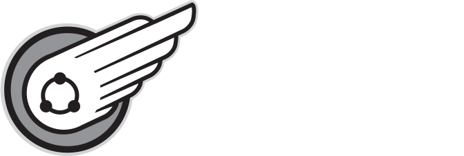
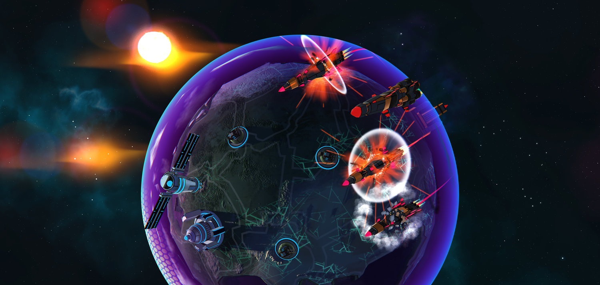
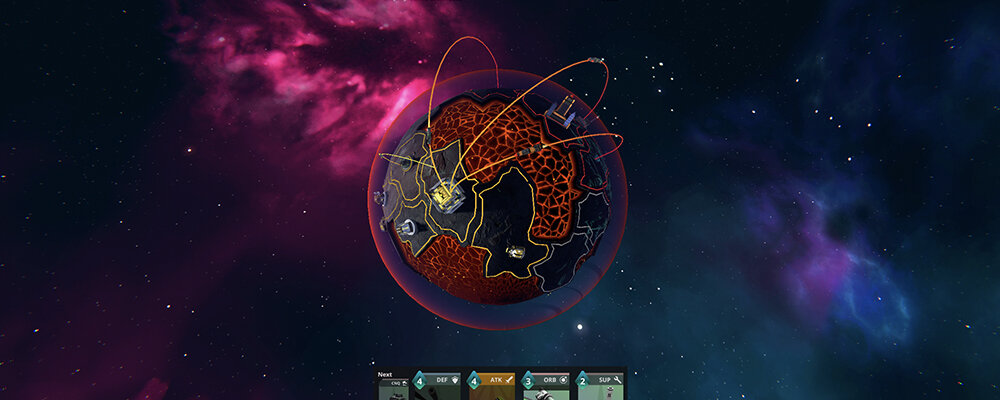
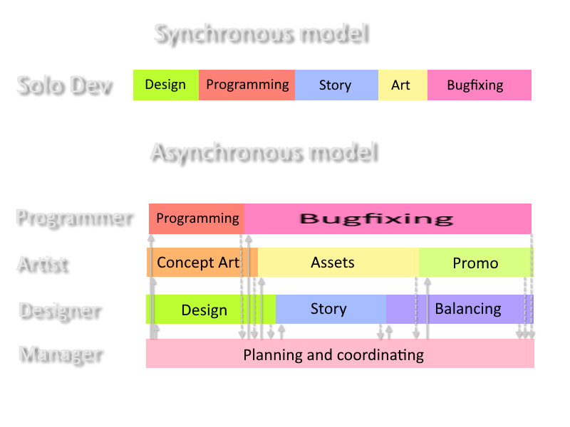
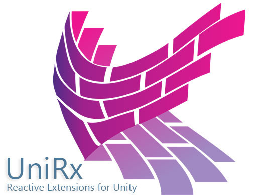

layout: true background-color: #272822 --- class: center, middle # .title[Programowanie Reaktywne] ## narzędzie do walki z asynchronicznymi potworami --- # Radosław Paszkowski ## Twitter - @RadekPaszkowski <div class="column"></div> <div class="column"> .center[ <!-- space to put it in the next line --> ] </div> --- # Kim jesteśmy .center[.panel-image[]] .center[.panel-image[]] --- # Kim jesteśmy <div class="column"><img src="Images/Team.jpg" alt="Team" width="284"/></div> <div class="column"> .center[ <!-- space to put it in the next line -->  ] </div> --- class:center, middle # .title[Problem: **Asynchroniczność**] --- name:Asynchronous # Co to programowanie asynchroniczne? <div class="center"></div> --- name:Issues # Problemy programowania asynchronicznego -- 2. Czytelność -- 2. Debuggowanie -- 1. Synchronizacja -- 4. Obsługa błędów -- .center[.panel-image[]] źródło: https://www.quora.com/What-are-the-challenges-of-doing-asynchronous-programming --- # Rozwiązania - Coroutines/Update *Tylko do rzeczy zmieniających się co klatkę* -- - Callbacks/Events *Łatwo prowadzi do Callback Hell* --- # Callbacks Graf .center[.panel-image[]] --- # Rozwiązania - Coroutines/Update *Tylko do rzeczy zmieniających się co klatkę* - Callbacks *Łatwo prowadzi do Callback Hell* - Promise/Future (TaskCompletionSource/Task) *Callback Hell, ale łatwiejsza obsługa wielu wątków oraz czekania na zakończenie wszystkich albo jednego z zadania. Za to trudniejsze debugowanie.* --- # Promise/Future Graf .center[.panel-image[]] --- # Rozwiązania - Coroutines/Update *Tylko do rzeczy zmieniających się co klatkę* - Callbacks/Events *Łatwo prowadzi do Callback Hell* - Promise/Future (TaskCompletionSource/Task) *Callback Hell, ale łatwiejsza obsługa wielu wątków oraz czekania na zakończenie wszystkich albo jednego z zadania. Za to trudniejsze debugowanie.* - Async/Await *Nadaje się do sekwencji czekania. Nadal trudne debuggowanie.* --- # Async/Await Graf .center[.panel-image[]] --- # Rozwiązania - Coroutines *Tylko do rzeczy zmieniających się co klatkę* - Callbacks/Events *Łatwo prowadzi do Callback Hell* - Promise/Future (TaskCompletionSource/Task) *Callback Hell, ale łatwiejsza obsługa wielu wątków oraz czekania na zakończenie wszystkich albo jednego z zadania. Za to trudniejsze debugowanie.* - Async/Await *Nadaje się do sekwencji czekania. Nadal trudne debuggowanie.* - Programowanie reaktywne *Hmmmm...* --- # Graf z piekła rodem .center[.panel-image[]] --- # Callback Hell 1 ```cs public void CallbackHell1() { Load(source1, OnLoaded1); } private void OnLoaded1() { Load(source2, OnLoaded2); } private void OnLoaded2() { Load(source3, OnLoaded3); } private void OnLoaded3() { ... } ``` --- # Callback Hell 2 ```cs public void CallbackHell2() { Load(source1, () => { Load(source2, () => { Load(source3, () => { ... }); }); }); } ``` --- # Programowanie reaktywne - Co to? .center[In computing, reactive programming is a declarative programming paradigm concerned with data streams and the propagation of change.] .center[*W informatyce, reaktywne programowanie to paradygmant programowania deklaratywnego związanego ze strumieniami danych oraz propagacją zmiany.*] źródło: https://en.wikipedia.org/wiki/Reactive_programming -- <div style="padding-bottom: 40px;"></div> ### .center[Eeeee, że co?] --- # Programowanie reaktywne - Co to? Take #2 .center[The Reactive Extensions (Rx) is a library for composing asynchronous and event-based programs using observable sequences and LINQ-style query operators.] .center[*Reactive eXtensions (Rx) to biblioteka do tworzenia asynchronicznych i opartych o wydarzenia programów używając obserwowalnych sekwencji i operatorów zapytań w stylu LINQ.*] źródło: https://archive.codeplex.com/?p=rx -- <div style="padding-bottom: 40px;"></div> ### .center[Zbyt wiele Microsoftu] --- # Programowanie reaktywne - Co to? Take #3 .center[Reactive programming is programming with asynchronous data streams.] .center[*Programowanie reaktywne to programowanie z asynchronicznymi strumieniami danych.*] źródło: https://gist.github.com/staltz/868e7e9bc2a7b8c1f754 -- .center[.panel-image[]] --- # Programowanie reaktywne - Co to? Take #4 .center[ReactiveX is a combination of the best ideas from the **Observer** pattern, the **Iterator** pattern, and **functional programming**.] .center[*ReactiveX to połączenie najlepszych pomysłów z wzorca **Observer**, **Iterator** oraz **programowania funkcyjnego**.*] źródło: http://reactivex.io/ --- # Observer .center[.panel-image[]] --- # Iterator .center[.panel-image[]] --- # Programowanie funkcyjne .center[.panel-image[]] --- # Programowanie reaktywne - Model .center[.panel-image[]] --- # Programowanie reaktywne - Model .center[.panel-image[]] --- # Programowanie reaktywne - Model .center[.panel-image[]] --- # Mantra programowania reaktywnego .center[.panel-image[]] --- # Programowanie reaktywne - Biblioteki <div class="column"><img src="Images/ReactiveXLogo.png" alt="ReactiveX Logo" width="400"/></div> <div class="column"></div> --- # Przykłady - Kliknięcie myszy .center[.panel-image[]] --- # Przykłady - Kliknięcie myszy RX .center[.panel-image[]] --- # Przykłady - Przeciągnij i upuść .center[.panel-image[]] --- # Przykłady - Przeciągnij i upuść RX .center[.panel-image[]] --- # Przykłady - Przeciągnij i upuść RX .center[.panel-image[]] --- # Przykłady - Wyświetlanie UI Zadanie: 1. Gdy wciśniemy przycisk 'H' pasek jest zawsze wyświetlony 2. Gdy życia są poniżej 20% pasek życia świeci się cały czas 3. Jeżeli życia są powyżej 20% 1. Jeżeli jesteśmy poza walką to pasek życia widoczny jest tylko gdy nastąpi zmiana punktów życia 2. Jeżeli jesteśmy podczas walki to 1. Jeżeli stoimy przez dłużej niż 5 sekund pasek życia się chowa - Chyba że nastąpi zmiana puntów życia 2. W przeciwnym wypadku pasek życia jest widoczny Pasek życia zawsze jest widoczny przez minimum 5 sekund. --- # Przykłady - Wyświetlanie UI .center[.panel-image[]] --- # Przykłady - Czekanie na zakończenie pracy wątku .center[.panel-image[]] --- # Programowanie reaktywne - Nowy Trend .center[.panel-image[]] źródło: http://reactivex.io/ --- class: middle, center # Wszystko jest strumieniem ;) --- # Źródła 1. https://github.com/neuecc/UniRx 2. https://gist.github.com/staltz/868e7e9bc2a7b8c1f754 3. https://rxmarbles.com/ 4. http://reactivex.io/ 5. https://en.wikipedia.org/wiki/Reactive_programming 6. https://medium.com/@davidjtomczyk/introduction-to-observable-85a5122bf260